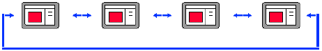
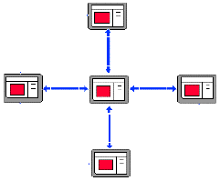
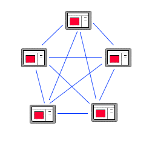
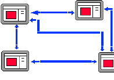
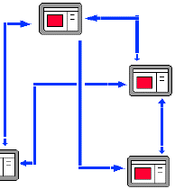

Navigational Structures
Let's look now at some of the standard navigational structures of web
pages. As the name suggests, a site's navigational structure describes the
paths of navigation through the site. When thinking about these
structures, keep in mind that while some sites consist of only a single
page, most "real" websites consist of many pages. In most
websites with more than just a few pages, you will see a combination
of several of these structures.
Linear and Circular

- Follows pre-defined path
- Links to NEXT and PREV
- Examples: Slide Show, Tour or Presentation
Hub and Spoke

- Central navigation hub with many links
- Other pages only have one "back" link, hence no navigation overhead
- Example: CS110 syllabus page links to each lecture page
Clique

- Every page connects to every other page
- No special "navigation" page
- Quickest to get around in, but every page must have all N links on it
- Adequate for small sites but unwieldy for larger
sites
- Example: the top level of the CS110 site
Rooted Tree

- The structure is "self-similar". It has a root web page that has subtrees
as its branches. Each subtree is a root with subtrees.
- Very modular, conceptually clear
- Separate subareas aren't connected
- Works well for big sites
- Examples: Yahoo!
Network or Graph

- Interconnections on a somewhat ad hoc basis
- A page might be connected to a number of other pages (based on logical content of pages on site)
- Can be too random; hard for visitors to understand
- Almost necessary for a large site
- Examples: Wellesley College Website
Project Considerations
Your project should consist of 8-10 pages. You should make sure to
discuss with your partner how your web pages are linked to make
navigation easy and logical for visitors. In the project design phase
you are required to describe the interconnection of all the pages on
your site and provide a brief discussion about the site's navigation
structure using the terminology learned today.